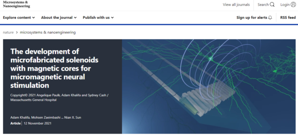
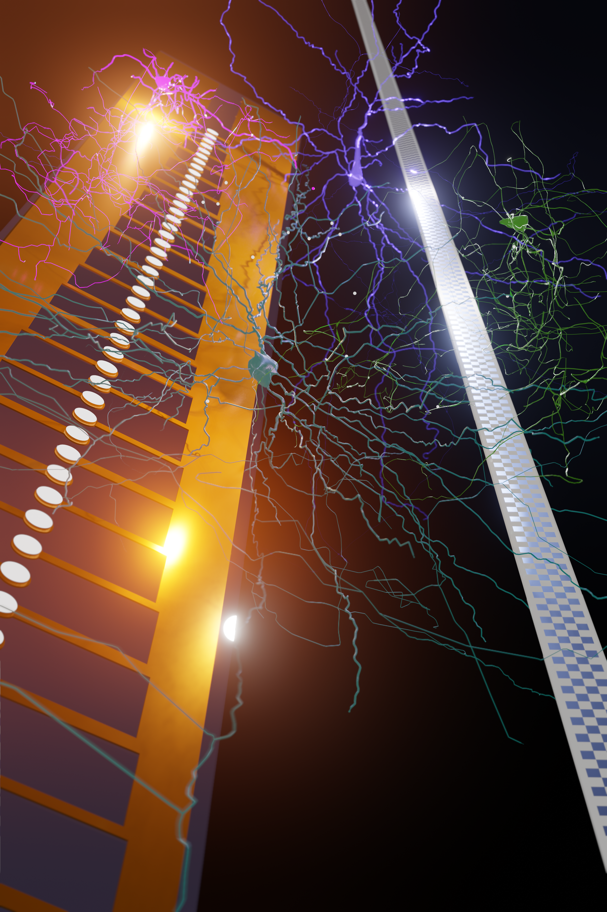
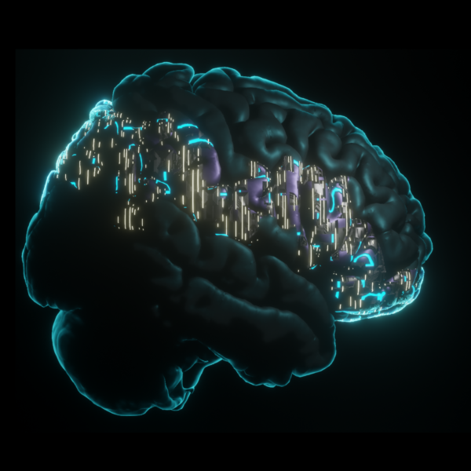

Neurotechnology Team
Pioneering high-density microelectrode arrays, micromagnetic neural stimulation, and real-time closed-loop brain-computer interfaces from bench to operating room.



Advanced Microelectrode & Magnetic Engineering
The future of clinical neuroscience relies on the spatial resolution and biocompatibility of the interfaces we use to record and stimulate the brain. Standard clinical contacts are physically massive relative to single neurons. Our team designs and validates high-density flexible arrays with porous platinum nanorod contacts, intraoperative Neuropixels probes, and microfabricated solenoids with magnetic cores for spatially confined micromagnetic stimulation.


Closed-Loop Brain-Computer Interfaces (BCIs)
Instead of continuous open-loop stimulation, our group develops intelligent, closed-loop systems such as CLoSES (Closed-Loop System for Electrical Stimulation). A closed-loop BCI continuously decodes neural oscillations or single-unit ensembles in real time and delivers targeted electrical stimulation phase-locked to endogenous rhythms or pathological state onset.
As a core lab in the BrainGate Clinical Trial, we also decode intended movement and speech signals from motor and prefrontal ensembles in individuals with tetraplegia.
Translational Validation in the Operating Room
Rapid advances in neurotechnology require rigorous electrochemical, preclinical, and clinical validation to be deployed safely in human patients. The NeuroHINTS Lab leads translational pipelines directly from preclinical models into the MGH operating rooms and Epilepsy Monitoring Unit.

Selected Team Publications (8)
-
Khalifa A, Zaeimbashi M, Zhou TX, Abrishami SM, Sun N, Park S, Šumarac T, Qu J, Zohar I, Yacoby A, Cash S, Sun NX. The development of microfabricated solenoids with magnetic cores for micromagnetic neural stimulation. Microsyst Nanoeng. 2021;7:91. doi:10.1038/s41378-021-00320-8
-
Hosman T, Hynes JB, Saab J, Wilcoxen KG, Buchbinder BR, Schmansky N, Cash SS, Eskandar EN, Simeral JD, Franco B, Kelemen J, Vargas-Irwin CE, Hochberg LR. Auditory cues reveal intended movement information in middle frontal gyrus neuronal ensemble activity of a person with tetraplegia. Sci Rep. 2021 Jan 11;11(1):98. doi:10.1038/s41598-020-77616-8
-
Zelmann R, Paulk AC, Basu I, Sarma A, Yousefi A, Crocker B, Eskandar E, Williams Z, Cosgrove GR, Weisholtz DS, Dougherty DD, Truccolo W, Widge AS, Cash SS. CLoSES: A platform for closed-loop intracranial stimulation in humans. Neuroimage. 2020 Dec;223:117314. doi:10.1016/j.neuroimage.2020.117314
-
Ryu SB, Paulk AC, Yang JC, Ganji M, Dayeh SA, Cash SS, Fried SI, Lee SW. Spatially confined responses of mouse visual cortex to intracortical magnetic stimulation from micro-coils. J Neural Eng. 2020 Oct 23;17(5):056036. doi:10.1088/1741-2552/abbd22
-
Krempp C, Paulk AC, Truccolo W, Cash SS, Zelmann R. Effect of closed-loop direct electrical stimulation during sleep spindles in humans. Annu Int Conf IEEE Eng Med Biol Soc. 2020 Jul;2020:3586-3589. doi:10.1109/EMBC44109.2020.9175404
-
Ganji M, Paulk AC, Yang JC, Vahidi NW, Lee SH, Liu R, Hossain L, Arneodo EM, Thunemann M, Shigyo M, Tanaka A, Ryu SB, Lee SW, Tchoe Y, Marsala M, Devor A, Cleary DR, Martin JR, Oh H, Gilja V, Gentner TQ, Fried SI, Halgren E, Cash SS, Dayeh SA. Selective formation of porous Pt nanorods for highly electrochemically efficient neural electrode interfaces. Nano Lett. 2019 Sep 11;19(9):6244-6254. doi:10.1021/acs.nanolett.9b02296
-
Milekovic T, Bacher D, Sarma AA, Simeral JD, Saab J, Pandarinath C, Yvert B, Sorice BL, Blabe C, Oakley EM, Tringale KR, Eskandar E, Cash SS, Shenoy KV, Henderson JM, Hochberg LR, Donoghue JP. Volitional control of single-electrode high gamma local field potentials by people with paralysis. J Neurophysiol. 2019; PMC30785814.
-
Vargas-Irwin CE, Feldman JM, King B, Simeral JD, Sorice BL, Oakley EM, Cash SS, Eskandar EN, Friehs GM, Hochberg LR, Donoghue JP. Watch, imagine, attempt: Motor cortex single-unit activity reveals context-dependent movement encoding in humans with tetraplegia. Front Hum Neurosci. 2018; PMC30524258.